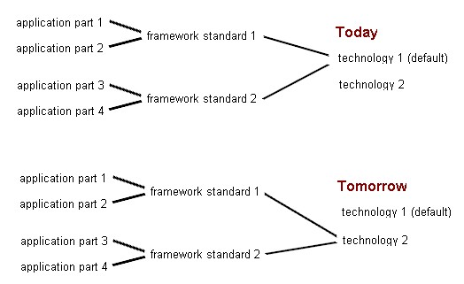

Motive
The main idea of the Cameleon Open Source Project (Camelon OSP) is to
liberate
from technology. Formulations frequently occurring should be soluble in
simplest imaginable way; the application developer should not get in
touch
with the used technology in this cases. Thus, we may exchange
technology
to match operating needs at a situated time.

Main Emphasis
First of all, typical needs for developing database applications have
been
faced, e.g. navigating through big amounts of data, selecting an entry
for editing, copying etc. and saving the new or changed data. To edit
properties
as stored in a database, there is e.g. a class DataPropertyAdministration
available, which is the super class of various entity property
administrations.
Range of Goods offered
At the moment, approx. 600 Cameleon OSP components support database
near
UI building via Swing, Applet. Servlet and JSP technology. Please read
the
corresponding
chapters for each solution. Oracle, MS SQL Server, MySQL, DB2/400 and
MS Access SQL
dialects
are supported.
See also: Deutsche
Anleitung Für Cameleon.pdf von Gunter Koch
© Copyright 2001-2011 Christoph
Müller, Kärntner Str. 56, D-70469 Stuttgart, Germany,
http://www.must.de